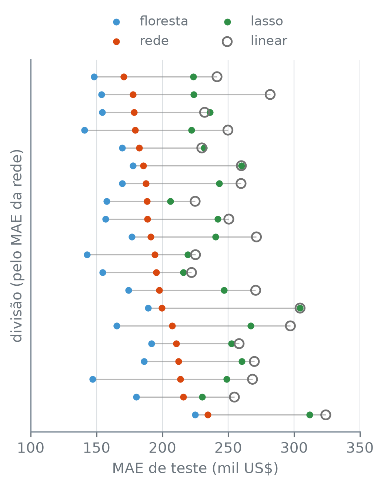
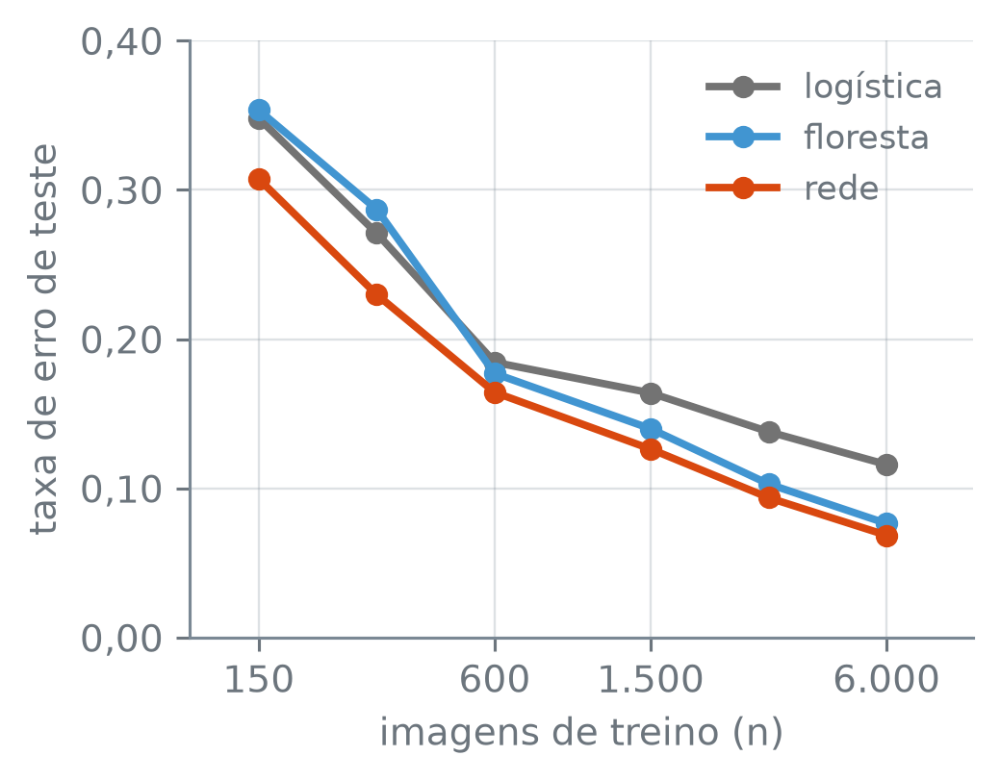

numero_br = lambda valor, casas=2: (
f"{valor:,.{casas}f}"
.replace(",", "_").replace(".", ",")
.replace("_", ".").replace("-", "−")
)Quando Usar Deep Learning
Nota
Esta seção corresponde à seção 10.6 de James et al. (2023).
Nas imagens de dígitos da seção 14.2, uma rede com duas camadas escondidas errou bem menos que a regressão logística. Deve-se então pedir uma rede para todo problema com dados? Nos jogadores de beisebol, com poucas centenas de linhas e 19 colunas, a rede pede padronização dos preditores e da resposta, um limite de épocas, uma busca por validação cruzada e uma semente. Esse trabalho compensa? Contra quais modelos a rede deve ser comparada para saber?
O profundo de deep learning, aprendizado profundo, se refere ao número de camadas: uma rede com muitas camadas escondidas é profunda, seja ela densa, como as deste capítulo, seja de outro tipo. Com uma ou duas camadas escondidas, as redes deste capítulo têm poucas camadas, mas a pergunta sobre quando usá-las é a mesma que se faz para as profundas: contra modelos mais simples, a rede ganha?
A função numero_br escreve os números com a pontuação brasileira:
Quatro modelos numa divisão
A tabela Hitters traz as estatísticas de 1986 dos jogadores das grandes ligas e o salário de 1987, em milhares de dólares. Descartados os jogadores sem salário e trocadas as colunas de texto por indicadoras, um terço dos jogadores fica para teste:
hitters = pd.read_csv(
"dados/Hitters.csv").dropna()
y = hitters["salario"]
X = pd.get_dummies(
hitters.drop(columns="salario"),
drop_first=True, dtype=float)
print("jogadores:", len(X))
print("colunas:", X.shape[1])
treino_X, teste_X, treino_y, teste_y = (
train_test_split(
X, y, test_size=1/3,
random_state=14))
print("treino:", len(treino_X))
print("teste:", len(teste_X))jogadores: 263
colunas: 19
treino: 175
teste: 88São 175 jogadores de treino e 88 de teste. Quatro modelos disputam a previsão do salário:
- a regressão linear por mínimos quadrados, com as 19 colunas;
- o lasso da seção 11.4, com as colunas padronizadas e o
alphaescolhido por validação cruzada de cinco grupos, numa grade de 61 valores de 0,001 a 1.000, igualmente espaçados em escala log; - a rede de uma camada escondida da seção 14.4, com preditores e resposta padronizados, e o número de unidades e o
alphaescolhidos por validação cruzada na mesma grade de lá: 16 ou 64 unidades e sete valores dealpha, de 0,1 a 100; - a floresta aleatória da seção 13.3, com 200 árvores e \(m = 4\) colunas sorteadas por divisão, perto de \(\sqrt{19}\), a escolha usual, e as colunas como estão, sem padronizar nem buscar nada.
As duas buscas usam os mesmos cinco grupos e o MAE como critério, e cada modelo vira uma função, para que os quatro possam ser ajustados de novo em outras divisões:
grupos = KFold(5, shuffle=True,
random_state=14)
metrica = "neg_mean_absolute_error"
def busca(modelo, grade, X, y):
cv = GridSearchCV(modelo, grade,
cv=grupos, scoring=metrica)
return cv.fit(X, y)
grade_lasso = np.logspace(-3, 3, 61)
grade_rede = np.logspace(-1, 2, 7)
def lasso_por_cv(X, y):
modelo = Pipeline([
("escala", StandardScaler()),
("lasso", Lasso(max_iter=100_000)),
])
grade = {"lasso__alpha": grade_lasso}
return busca(modelo, grade, X, y)
caminho = "rede__regressor__"
def rede_por_cv(X, y):
mlp = MLPRegressor(
hidden_layer_sizes=(16,),
max_iter=2000, random_state=14)
alvo = TransformedTargetRegressor(
mlp, transformer=StandardScaler())
modelo = Pipeline([
("escala", StandardScaler()),
("rede", alvo),
])
grade = {
caminho + "alpha": grade_rede,
caminho + "hidden_layer_sizes":
[(16,), (64,)]}
return busca(modelo, grade, X, y)
def ajusta_os_quatro(X, y):
floresta = RandomForestRegressor(
n_estimators=200, max_features=4,
random_state=14)
return {
"linear": LinearRegression().fit(X, y),
"lasso": lasso_por_cv(X, y),
"rede": rede_por_cv(X, y),
"floresta": floresta.fit(X, y),
}Lasso(max_iter=100_000)— o lasso; oalphadele é \(\lambda/(2n)\), na forma da seção 11.4, emax_iteré o limite de iterações do método de ajuste.RandomForestRegressor(n_estimators, max_features, random_state)— a floresta aleatória de regressão:n_estimatorsárvores, cada uma numa amostra bootstrap, commax_featurescolunas sorteadas como candidatas em cada divisão;random_statefixa os sorteios.
A rede, com centenas de pesos, erra menos que o lasso, que fica com poucos coeficientes? E a floresta, que não pediu padronização nem busca? A tabela traz, para cada modelo, o MAE e o \(R^2\) nos 88 jogadores de teste e o número de pesos do modelo, com o intercepto (na rede, os vieses) e, no lasso, só os coeficientes que não são zero:
modelos = ajusta_os_quatro(
treino_X, treino_y)
escolha = modelos["rede"].best_params_
camada = escolha[
caminho + "hidden_layer_sizes"]
alpha_rede = escolha[caminho + "alpha"]
print("rede escolhida:", camada, "e",
numero_br(alpha_rede))
lasso = modelos["lasso"].best_estimator_[-1]
mlp = modelos["rede"].best_estimator_[-1]
mlp = mlp.regressor_
pesos = {
"linear": modelos["linear"].coef_.size + 1,
"lasso": int((lasso.coef_ != 0).sum()) + 1,
"rede": sum(c.size for c in mlp.coefs_)
+ sum(v.size for v in mlp.intercepts_),
"floresta": "—",
}
linhas = {}
for nome, modelo in modelos.items():
prev = modelo.predict(teste_X)
linhas[nome] = {
"MAE": mean_absolute_error(teste_y, prev),
"R²": r2_score(teste_y, prev)}
tabela = pd.DataFrame(linhas).T
mostra = pd.DataFrame({
"MAE": tabela["MAE"].map(
lambda v: numero_br(v, 0)),
"R²": tabela["R²"].map(numero_br),
"pesos": pd.Series(pesos)})
print(mostra.to_string())
print("menor MAE:", tabela["MAE"].idxmin())
mae_floresta = tabela.loc["floresta", "MAE"]
print("floresta abaixo de 160:",
mae_floresta < 160)
r2 = tabela["R²"]
dif = abs(r2["rede"] - r2["floresta"])
print("R² da rede e da floresta")
print(" a menos de 0,01:", dif < 0.01)rede escolhida: (16,) e 3,16
MAE R² pesos
linear 232 0,48 20
lasso 236 0,44 9
rede 178 0,65 337
floresta 154 0,65 —
menor MAE: floresta
floresta abaixo de 160: True
R² da rede e da floresta
a menos de 0,01: Truepd.DataFrame(linhas).T— a tabela com uma coluna por modelo; o.Ta transpõe, e cada modelo vira uma linha.
Nesta divisão, a busca escolhe a mesma rede da seção 14.4, com 16 unidades e alpha 3,16. Ela erra menos que a regressão linear e que o lasso: 178 mil dólares em média, contra 232 e 236. A floresta tem o menor MAE de teste, abaixo de 160. No \(R^2\), rede e floresta ficam a menos de 0,01 uma da outra.
O lasso ficou com 8 das 19 colunas, 9 pesos com o intercepto, e a rede tem 337, contra os 20 da regressão linear. A floresta não se resume a uma lista de pesos: são 200 árvores, cada uma com as suas divisões.
Vinte divisões
São 88 jogadores de teste numa divisão só. Com outro sorteio de treino e teste, a ordem dos quatro muda? Com random_state de 0 a 19, tudo se repete em 20 divisões. Em cada uma, o lasso e a rede fazem a sua busca por validação cruzada só com os jogadores de treino dela, e os jogadores de teste não entram em nenhuma escolha. São 20 buscas da rede, e este chunk demora a rodar:
maes = {}
alphas = {}
alphas_rede = {}
for semente in range(20):
partes = train_test_split(
X, y, test_size=1/3,
random_state=semente)
tr_X, te_X, tr_y, te_y = partes
ajustados = ajusta_os_quatro(tr_X, tr_y)
maes[semente] = {
nome: mean_absolute_error(
te_y, m.predict(te_X))
for nome, m in ajustados.items()}
lasso_cv = ajustados["lasso"]
alphas[semente] = lasso_cv.best_params_[
"lasso__alpha"]
rede_cv = ajustados["rede"]
alphas_rede[semente] = (
rede_cv.best_params_[
caminho + "alpha"])
maes = pd.DataFrame(maes).T
alphas = pd.Series(alphas)
alphas_rede = pd.Series(alphas_rede)
print("divisões:", len(maes))
em_cima = alphas == grade_lasso.max()
em_baixo = alphas == grade_lasso.min()
print("alpha do lasso na ponta")
print(" de cima da grade:", em_cima.sum())
print(" de baixo da grade:", em_baixo.sum())
dif = maes["lasso"] - maes["linear"]
print("nelas, MAE do lasso e da linear")
print(" a menos de 2:",
(dif[em_baixo].abs() < 2).all())
print("alpha da rede na ponta")
print(" de cima da grade:",
(alphas_rede == grade_rede.max()).sum())
print(" de baixo da grade:",
(alphas_rede == grade_rede.min()).sum())divisões: 20
alpha do lasso na ponta
de cima da grade: 0
de baixo da grade: 1
nelas, MAE do lasso e da linear
a menos de 2: True
alpha da rede na ponta
de cima da grade: 0
de baixo da grade: 1Na ponta de cima da grade, a das penalidades mais fortes, o alpha do lasso não cai em nenhuma divisão. Na de baixo, cai em uma: nela, a validação cruzada prefere a menor penalidade da grade, e o lasso fica a menos de 2 mil dólares de MAE da regressão linear, que é o lasso sem penalidade nenhuma.
A grade da rede também tem pontas. O alpha dela não cai na de cima em nenhuma divisão e cai na de baixo em uma: nessa divisão, uma grade que descesse mais poderia escolher uma penalidade ainda menor.
A figura mostra os quatro MAE de teste de cada divisão numa linha. O que olhar é a ordem das cores dentro de cada linha, e se ela se repete de uma linha para a outra:
cores = {"floresta": "C0", "rede": "C1",
"lasso": "C2"}
ordem = maes.sort_values("rede").index
posicao = pd.Series(
range(len(ordem), 0, -1), index=ordem)
fig, ax = plt.subplots(figsize=(3.8, 4.8))
altura = posicao[maes.index]
ax.hlines(altura, maes.min(axis=1),
maes.max(axis=1), color="0.45",
linewidth=0.8, alpha=0.5, zorder=1)
for nome, cor in cores.items():
ax.scatter(maes[nome], altura,
s=22, color=cor, label=nome,
zorder=2, linewidths=0)
ax.scatter(maes["linear"], altura,
s=40, facecolors="none",
edgecolors="0.45", linewidths=1.2,
label="linear", zorder=3)
ax.set_yticks([])
ax.set_ylabel("divisão (pelo MAE da rede)")
ax.set_xlabel("MAE de teste (mil US$)")
ax.xaxis.set_major_formatter(
lambda v, _: numero_br(v, 0))
ax.legend(loc="lower center",
bbox_to_anchor=(0.5, 1.0), ncol=2)
plt.tight_layout()
plt.show()
Hitters, uma divisão por linha, ordenadas de cima para baixo pelo MAE da rede: floresta aleatória (azul), rede (laranja), lasso (verde) e regressão linear (círculo cinza vazado, que deixa ver o verde quando os dois quase coincidem). O traço cinza liga o menor ao maior MAE de cada divisão.
maes.sort_values("rede").index— os rótulos das divisões, do menor ao maior MAE da rede;posicaodá a cada divisão a sua altura no gráfico, a do menor MAE em cima.maes.min(axis=1),maes.max(axis=1)— o menor e o maior valor de cada linha, isto é, de cada divisão.ax.hlines(y, x0, x1)— um traço horizontal na alturay, dex0ax1, um por divisão.
Os números confirmam a figura: o MAE médio das 20 divisões e, para quatro pares de modelos, em quantas divisões o primeiro erra menos:
print("MAE médio de teste:")
medias = maes.mean()
for nome, media in medias.items():
print(f" {nome}: {numero_br(media, 0)}")
print("menor média:", medias.idxmin())
print("floresta abaixo de 170:",
medias["floresta"] < 170)
pares = [("rede", "linear"),
("rede", "lasso"),
("floresta", "rede"),
("lasso", "linear")]
for a, b in pares:
n = (maes[a] < maes[b]).sum()
print(f"{a} < {b}: {n} de {len(maes)}")
folga = maes["rede"] - maes["floresta"]
print("floresta mais de 5 abaixo")
print(" da rede em todas:", (folga > 5).all())
lineares = maes[["lasso", "linear"]]
dist = lineares.min(axis=1) - maes["rede"]
print("lineares mais de 10 acima")
print(" da rede em todas:", (dist > 10).all())
menor = maes.min().min()
maior = maes.max().max()
print("menor MAE:", numero_br(menor, 0))
print("maior MAE:", numero_br(maior, 0))MAE médio de teste:
linear: 260
lasso: 244
rede: 196
floresta: 168
menor média: floresta
floresta abaixo de 170: True
rede < linear: 20 de 20
rede < lasso: 20 de 20
floresta < rede: 20 de 20
lasso < linear: 17 de 20
floresta mais de 5 abaixo
da rede em todas: True
lineares mais de 10 acima
da rede em todas: True
menor MAE: 141
maior MAE: 324Nas 20 divisões, a rede erra menos que a regressão linear e que o lasso em todas, por mais de 10 mil dólares em cada uma, e a floresta erra menos que a rede em todas, por mais de 5 mil dólares em cada uma. Entre os lineares, o lasso erra menos que a regressão linear em 17 das 20.
Em média, a floresta erra menos de 170 mil dólares, a rede 196, o lasso 244 e a regressão linear 260. A ordem floresta, rede, modelos lineares se repetiu em todas as divisões; a ordem entre o lasso e a regressão linear, não.
Nestes dados, então, a rede ganha dos modelos lineares e perde para a floresta. O trabalho que a rede pediu compensou contra os lineares, mas não contra a floresta, que, sem padronização e sem busca, errou menos que ela nas 20 divisões.
O princípio da navalha de Occam manda, entre métodos de desempenho parecido, ficar com o mais simples. Aqui ele não tem o que decidir: a floresta fica abaixo da rede, e a rede abaixo dos lineares, em todas as divisões. Se o lasso e a rede tivessem errado parecido, pesaria também a leitura: na divisão da primeira tabela, os 8 coeficientes do lasso se leem um a um, e os 337 pesos da rede não.
Onde a rede compensa
O treino dos jogadores tem 175 linhas, com colunas de naturezas diferentes: rebatidas, anos de carreira, liga. As imagens de dígitos da seção 14.2 são outro tipo de dado: todas as colunas são pixels, na mesma escala, e o dígito é uma combinação deles:
treino = pd.read_csv(
"dados/mnist_treino.csv.gz")
teste = pd.read_csv(
"dados/mnist_teste.csv.gz")
dig_X = treino.drop(columns="digito") / 255
dig_y = treino["digito"]
dig_teste_X = teste.drop(
columns="digito") / 255
dig_teste_y = teste["digito"]
print("imagens de treino:", len(dig_X))
print("colunas:", dig_X.shape[1])
print("imagens de teste:", len(dig_teste_y))imagens de treino: 6000
colunas: 784
imagens de teste: 2000São 6.000 imagens de treino, com 784 colunas, e 2.000 de teste. Nelas, a floresta também ganha da rede, ou a ordem se inverte? E o número de imagens de treino importa? A comparação da seção 14.2 se refaz com as primeiras \(n\) imagens de treino, de 150 a 6.000, com a logística e a arquitetura da rede de lá, e agora também com uma floresta de 200 árvores. Uma rede, com uma semente só, pode ter sorte ou azar no sorteio dos pesos iniciais e da ordem em que as imagens passam pelo treino; por isso entram cinco redes, com as sementes de 0 a 4. As configurações não são reescolhidas para cada \(n\). O que se conta são os erros nas mesmas imagens de teste:
tamanhos = (150, 300, 600,
1500, 3000, 6000)
erros = {}
for n in tamanhos:
parte_X = dig_X.iloc[:n]
parte_y = dig_y.iloc[:n]
dig_modelos = {
"logística": LogisticRegression(
C=0.1, max_iter=1000),
"floresta": RandomForestClassifier(
n_estimators=200,
random_state=14)}
for s in range(5):
rede = MLPClassifier(
hidden_layer_sizes=(256, 128),
random_state=s)
dig_modelos[f"rede {s}"] = rede
erros[n] = {}
for nome, m in dig_modelos.items():
m.fit(parte_X, parte_y)
prev = m.predict(dig_teste_X)
errados = prev != dig_teste_y
erros[n][nome] = int(errados.sum())
erros = pd.DataFrame(erros).T
redes = erros.filter(like="rede ")
resumo = pd.DataFrame({
"logística": erros["logística"],
"floresta": erros["floresta"],
"rede": redes.mean(axis=1)})
um = lambda v: numero_br(v, 1)
print(resumo.to_string(
formatters={"rede": um})) logística floresta rede
150 696 707 614,8
300 542 574 459,8
600 369 354 328,8
1500 328 280 252,8
3000 276 206 187,6
6000 232 153 137,2RandomForestClassifier(n_estimators, random_state)— a floresta aleatória de classificação; cada árvore vota numa classe, e a floresta fica com a mais votada. Semmax_features, sorteia \(\sqrt{p}\) colunas por divisão, a escolha usual para classificação.erros.filter(like="rede ")— as colunas cujo nome contém"rede ", aqui as cinco redes;.mean(axis=1)tira a média de cada linha, isto é, de cada \(n\).df.to_string(formatters={"rede": um})— a tabela como texto, com a colunaredeescrita pela funçãoum, com uma casa decimal.
A coluna rede é a média dos erros das cinco redes. As perguntas se respondem com comparações linha a linha, e a última delas com a razão entre os erros da rede e os da logística:
media_redes = resumo["rede"]
outras = resumo[["logística", "floresta"]]
menor_outra = outras.min(axis=1)
print("rede abaixo das outras duas")
print(" em todo n:",
(media_redes < menor_outra).all())
folga_dig = (resumo["floresta"]
- media_redes)
print("floresta mais de 5 erros")
print(" acima da rede em todo n:",
(folga_dig > 5).all())
largura = (redes.max(axis=1)
- redes.min(axis=1))
print("maior distância entre as redes:",
int(largura.max()))
quedas = resumo.diff().dropna() < 0
print("as três caem a cada n:",
quedas.all().all())
razao = media_redes / resumo["logística"]
print("razão rede/logística:")
texto = razao.map(numero_br)
print(texto.to_string())
print("razão > 0,8 (n ≤ 600):",
(razao.loc[:600] > 0.8).all())
print("razão < 0,8 (n ≥ 1.500):",
(razao.loc[1500:] < 0.8).all())
vantagem = (resumo["logística"]
- media_redes)
print("erros a menos que a logística:")
print(vantagem.map(um).to_string())rede abaixo das outras duas
em todo n: True
floresta mais de 5 erros
acima da rede em todo n: True
maior distância entre as redes: 35
as três caem a cada n: True
razão rede/logística:
150 0,88
300 0,85
600 0,89
1500 0,77
3000 0,68
6000 0,59
razão > 0,8 (n ≤ 600): True
razão < 0,8 (n ≥ 1.500): True
erros a menos que a logística:
150 81,2
300 82,2
600 40,2
1500 75,2
3000 88,4
6000 94,8serie.loc[:600],serie.loc[1500:]— as linhas com rótulo até 600 e de 1.500 em diante. Com.loc, o rótulo da ponta entra no resultado, ao contrário doiloc, em que o fim do intervalo fica de fora.
Na figura, o que olhar é se a linha laranja, da rede, fica abaixo das outras duas em todo \(n\), e como a distância entre ela e a cinza, da logística, muda com \(n\):
n_teste = len(dig_teste_y)
taxas = resumo / n_teste
fig, ax = plt.subplots(figsize=(3.8, 3.0))
cores = {"logística": "0.45",
"floresta": "C0", "rede": "C1"}
for nome, cor in cores.items():
ax.plot(taxas.index, taxas[nome],
color=cor, marker="o",
markersize=5, label=nome)
ax.set_xscale("log")
marcas = [150, 600, 1500, 6000]
rotulos = [numero_br(n, 0) for n in marcas]
ax.set_xticks(marcas, rotulos)
ax.minorticks_off()
ax.set_xlabel("imagens de treino (n)")
ax.set_ylabel("taxa de erro de teste")
ax.yaxis.set_major_formatter(
lambda v, _: numero_br(v, 2))
ax.set_ylim(bottom=0)
ax.legend(loc="upper right")
plt.tight_layout()
plt.show()
ax.set_xticks(posicoes, rotulos)— marca o eixo horizontal só nas posições dadas, com os rótulos dados;ax.minorticks_off()tira as marcas menores que a escala log acrescenta.
As três curvas caem a cada passo. Com 150 imagens de treino, menos que as 175 linhas de treino dos jogadores, a rede já erra menos que a floresta e que a logística, e isso vale em todo \(n\), com a floresta mais de 5 erros acima da média das redes. As cinco redes ficam perto umas das outras: em nenhum \(n\) a que mais erra passa a que menos erra por mais de 35 erros.
Nos jogadores, a floresta ganhou da rede nas 20 divisões. O número de linhas, sozinho, não explica essa troca de posição: com menos linhas de treino que nos jogadores, a rede ganhou nas imagens. Os dois problemas, porém, diferem em outras coisas: o tipo das colunas, quantas são (19 e 784), a resposta e a medida de erro, as próprias redes e o \(m\) da floresta. Dois conjuntos de dados não dizem qual dessas diferenças pesa.
Se o número de imagens pesa na distância entre a rede e a logística depende de como ela se mede. Em número de imagens, a rede erra 81,2 imagens a menos que a logística com 150 imagens de treino e 94,8 com 6.000, e só 40,2 com 600; na figura, a distância vertical entre a linha laranja e a cinza é parecida nas duas pontas. Em proporção dos erros da logística, a razão entre os erros das duas é 0,88 com 150 imagens e 0,59 com 6.000: fica acima de 0,8 até 600 imagens e abaixo de 0,8 de 1.500 em diante. Nessa medida, a vantagem da rede é pequena com poucas centenas de imagens e maior com milhares.
Nota
O que as comparações entre modelos desta seção mostram. Nos jogadores, uma tabela pequena com colunas de naturezas diferentes, a floresta errou menos que a rede em todas as divisões, e a rede, menos que os modelos lineares. Ali, a rede e o lasso foram escolhidos por validação cruzada, e a floresta ficou com a configuração usual, sem busca. Nas imagens, a rede errou menos que a floresta e que a logística em todo \(n\), e a razão entre os erros dela e os da logística ficou acima de 0,8 até 600 imagens e abaixo de 0,8 de 1.500 em diante. Ali, nenhum dos três modelos passou por busca: a rede e a logística usam a configuração da seção 14.2, a mesma em todo \(n\), e a floresta, a usual.
A orientação geral, que dois conjuntos de dados não bastam para provar. Uma rede neural tende a compensar quando a resposta depende de combinações de muitas colunas do mesmo tipo, como os pixels de uma imagem, sobretudo com muitos dados de treino. Em tabelas com colunas de naturezas diferentes, a comparação começa pelos modelos lineares e pelas florestas, que são mais fáceis de ajustar, e os lineares se deixam ler coeficiente a coeficiente.
A rede densa desta seção não usa a vizinhança dos pixels: cada pixel é uma coluna, e nada na rede diz quais colunas são pixels vizinhos. Se as 784 colunas forem embaralhadas numa ordem sorteada, a mesma em todas as imagens de treino e de teste, a rede deve aprender tão bem quanto com os pixels na ordem. A rede de semente 0 é ajustada de novo com os pixels das 6.000 imagens embaralhados, na mesma ordem sorteada em todas:
rng = np.random.default_rng(14)
ordem = rng.permutation(dig_X.shape[1])
embaralhada = MLPClassifier(
hidden_layer_sizes=(256, 128),
random_state=0)
embaralhada.fit(
dig_X.iloc[:, ordem], dig_y)
prev = embaralhada.predict(
dig_teste_X.iloc[:, ordem])
erros_emb = int(
(prev != dig_teste_y).sum())
na_ordem = redes.loc[6000]
print("rede 0, pixels na ordem:",
na_ordem["rede 0"])
print("rede 0, embaralhados:", erros_emb)
print("5 redes, pixels na ordem:")
print(" de", na_ordem.min(),
"a", na_ordem.max())
dentro = (na_ordem.min() <= erros_emb
<= na_ordem.max())
print("dentro dessa faixa:", dentro)rede 0, pixels na ordem: 141
rede 0, embaralhados: 132
5 redes, pixels na ordem:
de 124 a 146
dentro dessa faixa: Truerng.permutation(k)— os inteiros de 0 ak − 1numa ordem sorteada pelo geradorrng.df.iloc[:, ordem]— todas as linhas dedf, com as colunas nas posições dadas porordem, nessa ordem.
Com os pixels embaralhados, a rede de semente 0 erra 132 imagens de teste, contra 141 com os pixels na ordem, e fica dentro da faixa das cinco redes treinadas com os pixels na ordem, de 124 a 146: a diferença não se distingue da que a troca de semente já produz. A rede densa não vê essa estrutura; quando os dados têm vizinhança ou ordem, a candidata é uma rede que a use.
As redes convolucionais usam a vizinhança dos pixels e são a ferramenta usual para imagens; as redes recorrentes usam a ordem das palavras de um texto ou dos valores de uma série no tempo. As convolucionais costumam ter muitas camadas; as recorrentes aplicam a mesma camada a cada passo da sequência. As duas se ajustam com bibliotecas próprias de tensores, em geral com placas de vídeo.
James, Gareth, Daniela Witten, Trevor Hastie, Robert Tibshirani, e Jonathan Taylor. 2023. An Introduction to Statistical Learning with Applications in Python. Springer.